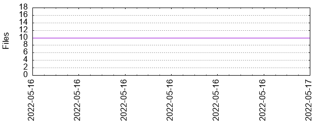

Files
General
Activity
Authors
Files
Lines
Tags
Total files
17
Total lines
423030
Average file size
1874806.94 bytes
File count by date

Extensions
Extension
Files (%)
Lines (%)
Lines/file
1 (5.88%)
202 (0.05%)
202
csv
3 (17.65%)
202621 (47.90%)
67540
md
3 (17.65%)
111 (0.03%)
37
py
3 (17.65%)
335 (0.08%)
111
txt
7 (41.18%)
219761 (51.95%)
31394